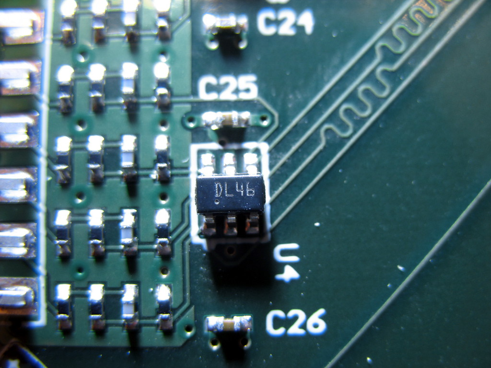
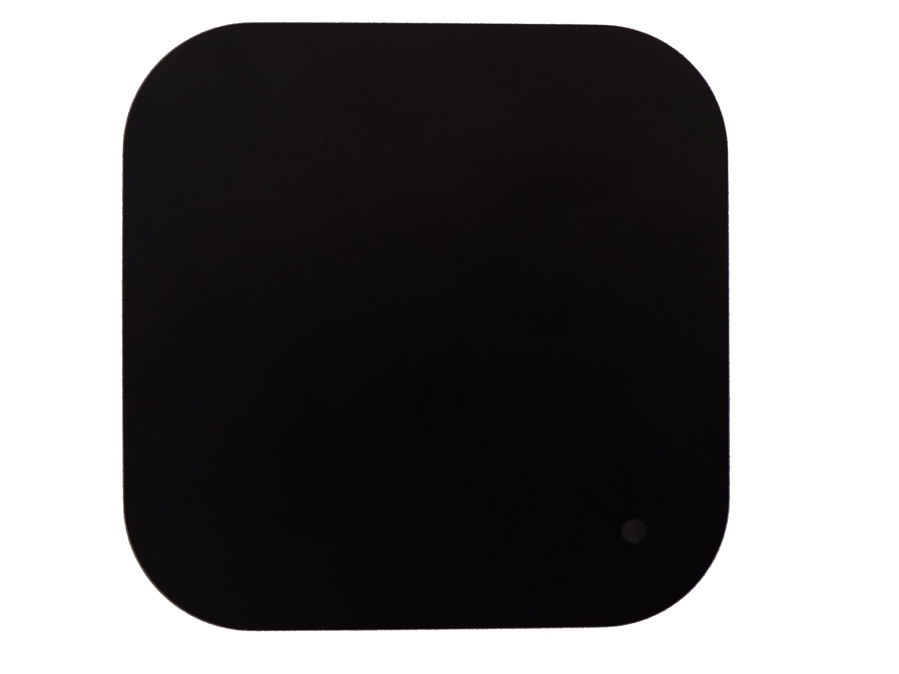
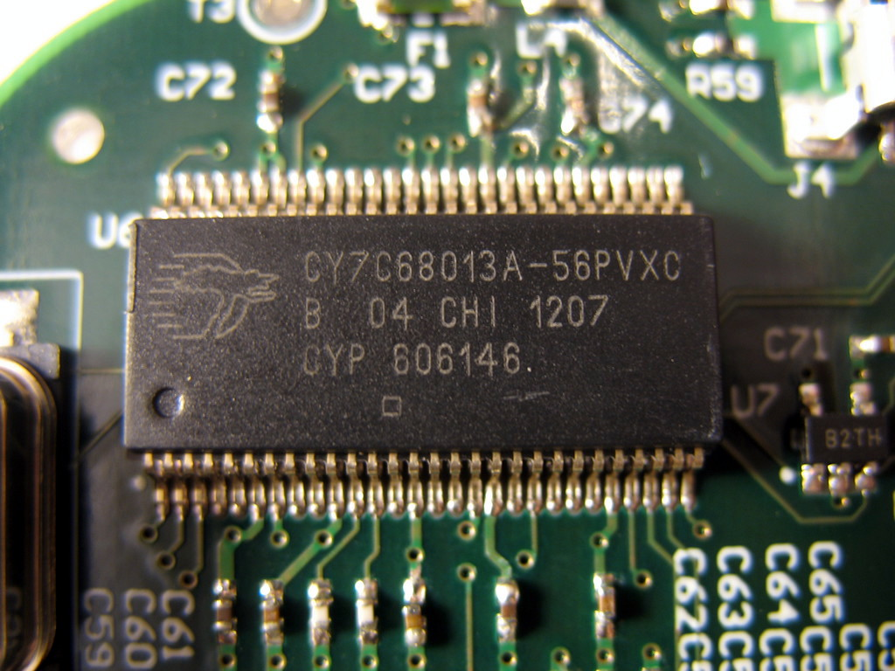
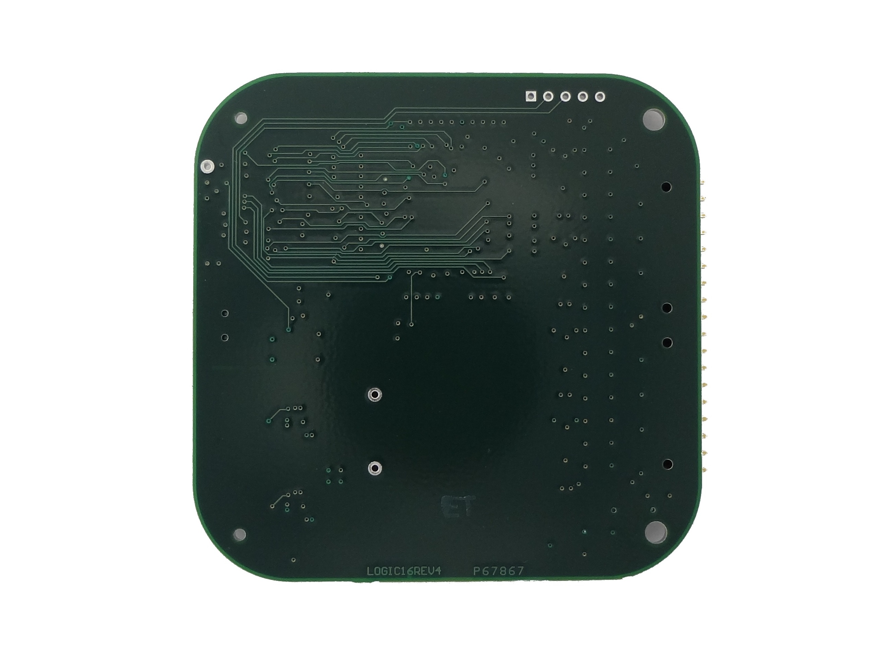
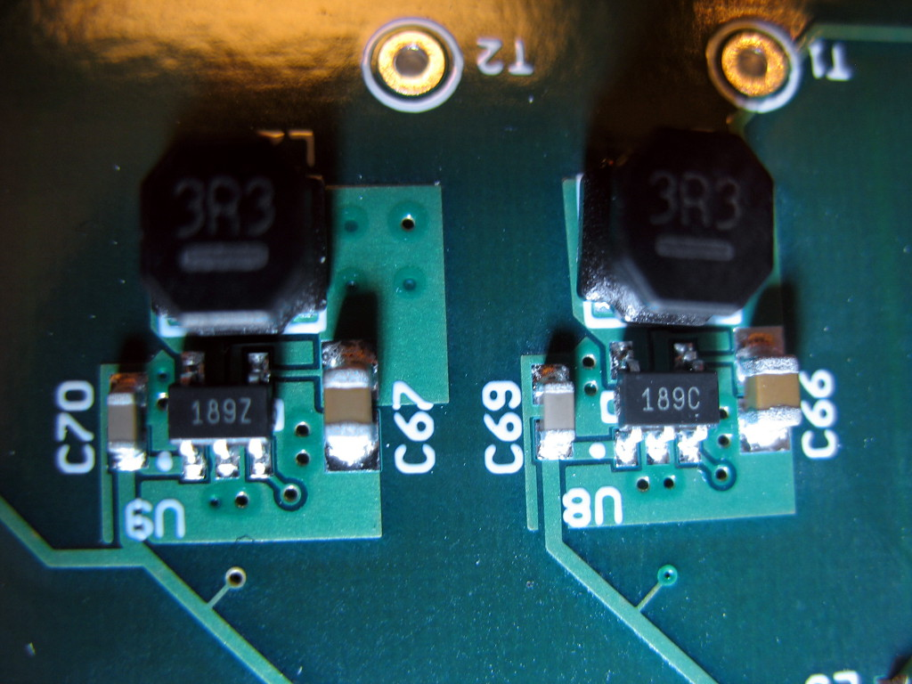

Saleae Logic16¶

Saleae Logic16¶
| Status | supported |
| Source code | saleae-logic16 |
| Channels | 3/6/9/16 |
| Samplerate | 100/50/32/16MHz |
| Samplerate (state) | — |
| Triggers | none (SW-only) |
| Min/max voltage | -0.9V — 6V |
| Threshold voltage | configurable:for 1.8V to 3.6V systems: VIH=1.4V, VIL=0.7Vfor 5V systems: VIH=3.6V, VIL=1.4V |
| Memory | none |
| Compression | yes |
| Website | saleae.com |
The Saleae Logic16 is a USB-based, 16-channel logic analyzer with 100/50/32/16MHz sampling rate (at 3/6/9/16 enabled channels).
The case requires a Torx T5 screwdriver to open.
See Saleae Logic16/Info for more details (such as lsusb -v output) about the device.
See Saleae Logic for the predecessor product of the Saleae Logic16.
Hardware¶
- FPGA: Xilinx Spartan-3A XC3S200A, 200K gates (datasheeet)
- USB interface chip: Cypress CY7C68013A-56PVXC (FX2LP) (datasheet)
- Ultralow capacitance ESD protection: 4x ST DVIULC6-4SC6 (datasheet)
- 2Kbit I2C EEPROM: Microchip 24AA02 (datasheet) (marking: "B2TH", starts with "B2" always, the last 2 characters are a "traceability code")
- 2.5MHz, 1.5A synchronous step down switching regulator (1.2V): Semtech SC189 (datasheet) (marking: "189C")
- 2.5MHz, 1.5A synchronous step down switching regulator (3.3V): Semtech SC189 (datasheet) (marking: "189Z")
- N-MOSFET: 2x 2N7002 type MOSFET (marking: "72Y7"). Connected as "low-side" switch/LED driver and inverter.
Pinouts and connections:
JTAG header (FPGA):
The J3 pin header is a JTAG connector wired to the FPGA. The pins are (from left to right, the right-most pin, pin number 1, is square):
| 5 | 4 | 3 | 2 | 1 |
|---|---|---|---|---|
| GND | TMS | TCK | TDO | TDI |
Testpoints:
| T1 | T2 | T3 |
|---|---|---|
| 1.2V | 3.3V | GND (FX2) |
Cypress FX2:
| (FPGA 15, IO_L05P_3) PD5 | 1- | O | -56 | PD4 (FPGA 12, IO_L04P_3) |
|---|---|---|---|---|
| (FPGA 13, IO_L04N_3) PD6 | 2- | -55 | PD3 (FPGA 44, IO_L09N_2) | |
| (FPGA 10, IO_L03N_3) PD7 | 3- | -54 | PD2 (FPGA 5, IO_L02P_3) | |
| GND | 4- | -53 | PD1 (FPGA 4, IO_L01N_3) | |
| (FPGA 90, IO_0) CLKOUT | 5- | -52 | PD0 (FPGA 6, IO_L02N_3) | |
| VCC | 6- | -51 | *WAKEUP (3.3V) | |
| GND | 7- | -50 | VCC | |
| (FPGA 3, IO_L01P_3) RDY0/*SLRD | 8- | -49 | RESET# (3.3V via D2 (diode?)) | |
| (FPGA 16, IO_L05N_3) RDY1/*SLWR | 9- | -48 | GND | |
| AVCC | 10- | -47 | PA7 (FPGA 9, IO_L03P_3) | |
| (24MHz crystal) XTALOUT | 11- | -46 | PA6 (FPGA 30, IO_L04P_2) | |
| (24MHz crystal) XTALIN | 12- | -45 | PA5 (FPGA 85, IO_L03P_0) | |
| AGND | 13- | -44 | PA4 (FPGA 98, IO_L06P_0) | |
| AVCC | 14- | -43 | PA3 (FPGA 51, MISO) | |
| (USB D+) DPLUS | 15- | -42 | PA2 (FPGA 53, CCLK) | |
| (USB D-) DMINUS | 16- | -41 | PA1 (FPGA 48, INIT_B) | |
| AGND | 17- | -40 | PA0 (FPGA 54, DONE) | |
| VCC | 18- | -39 | VCC | |
| GND | 19- | -38 | CTL2 (FPGA 100, PROG_B) | |
| (FPGA 84, IO_L02N_0) *IFCLK | 20- | -37 | CTL1 (FPGA 97, IP_0) | |
| RESERVED | 21- | -36 | CTL0 (FPGA 94, IO_L05N_0) | |
| (EEPROM SCL) SCL | 22- | -35 | GND | |
| (EEPROM SDA) SDA | 23- | -34 | VCC | |
| VCC | 24- | -33 | GND | |
| (FPGA 40, IO_L08P_2) PB0 | 25- | -32 | PB7 (FPGA 93, IO_L05P_0) | |
| (FPGA 78, IO_L01N_0) PB1 | 26- | -31 | PB6 (FPGA 37, IO_L07N_2) | |
| (FPGA 77, IO_L01P_0) PB2 | 27- | -30 | PB5 (FPGA 41, IO_L08N_2) | |
| (FPGA 49, IO_L10N_2) PB3 | 28- | -29 | PB4 (FPGA 46, MOSI) |
Other FPGA connections:
| 28 | CH0 | 52 | CH8 |
|---|---|---|---|
| 29 | CH1 | 56 | CH9 |
| 32 | CH2 | 57 | CH10 |
| 33 | CH3 | 60 | CH11 |
| 34 | CH4 | 61 | CH12 |
| 36 | CH5 | 62 | CH13 |
| 43 | CH6 | 64 | CH14 |
| 50 | CH7 | 65 | CH15 |
| 73 | LED (active low) |
Photos¶
Saleae Logic16 Xilinx Xc3s200a
 Saleae Logic16 Bottom
Saleae Logic16 Bottom
 Saleae Logic16 Dl46
{kind=link}
 Saleae Logic16 Pcb Top
Saleae Logic16 Pcb Top
 Saleae Logic16 72y7
Saleae Logic16 72y7
 Saleae Logic16
{kind=link}
 Saleae Logic16 Cypress Fx2lp
{kind=link}
 Saleae Logic16 Bottom
Saleae Logic16 Bottom
 Saleae Logic16 Pcb Bottom
{kind=link}
 Saleae Logic16 189z 189c
{kind=link}
 Saleae Logic16 Eeprom B2th
Saleae Logic16 Eeprom B2th
Firmware¶
Firmware and FPGA bitstream usage¶
To use the Saleae Logic16 (or its clones) with sigrok, you must first use a Python script to extract the FX2 firmware and the FPGA bitstreams from version 1.2.10 of Saleae's Logic software.
First download the Saleae vendor software. This version has been tested to work, but more recent versions are not supported currently (see bug #989). Old Saleae vendor software versions can be downloaded from support.saleae.com. (32-bit vs 64-bit download doesn't matter; both produce the same output.)
Then extract the Logic Linux binary from the zip file and use the sigrok-fwextract-saleae-logic16 tool to extract the files from it. On Windows, this Python script can be run from python.exe. On Linux, it can be executed directly:
$ **sigrok-fwextract-saleae-logic16 Logic**
saved 5214 bytes to saleae-logic16-fx2.fw
saved 149516 bytes to saleae-logic16-fpga-18.bitstream
saved 149516 bytes to saleae-logic16-fpga-33.bitstream
Copy these files to the directory where your libsigrok installation expects them and they will be found and used automatically by the libsigrok saleae-logic16 driver.
On Linux, this is usually /usr/local/share/sigrok-firmware or /usr/share/sigrok-firmware. The latter is correct on Ubuntu (and where files are created by the unrelated sigrok-firmware-fx2lafw package).
On Windows, they should be placed in C:\Program Files\sigrok\PulseView\share\sigrok-firmware\.
On macOS, they should be placed in /[…]/PulseView.app/Contents/share/sigrok-firmware/.
Technical firmware details¶
The firmware for the FX2LP is embedded in the vendor application as a set of Intel HEX lines. Each line is uploaded individually with a separate control transfer. The firmware currently occupies the address range [0x0000-0x145d], but is uploaded out of order.
See Saleae Logic16/Firmware for more details on the vendor firmware.
Driver¶
In Windows, the USB driver must also be installed using Zadig, similar to other devices, or you will get sr: saleae-logic16: Failed to init device.
Protocol¶
Sample format:
The samples (as received via USB) for the enabled probes (3, 6, 9, or 16) are organized as follows:
**0xLL 0xLL 0xMM 0xMM 0xNN 0xNN 0xPP 0xPP 0xQQ 0xQQ 0xRR 0xRR ...**
In the above example, 3 probes are enabled. For each probe there are 2 bytes / 16 bits (e.g. 0xLL 0xLL for probe 0), then the next probe's data is received (0xMM 0xMM for probe 1), then 0xNN 0xNN for probe 2. When 2 bytes have been received for all enabled probes, the process restarts with probe 0 again.
The 16 bits of data per probe seem to contain the pin state of the respective probe (1: high, 0: low) at 16 different sampling points/times (which ones depends on the samplerate).
Configuration:
Endpoint 1 is used for configuration of the analyzer. The transfers are "encrypted" using a simple series of additions and XORs. Two kinds of transfers are used; a 3 byte out transfer starting with 0x81 followed by a 1 byte in transfer, and a 4 byte out transfer starting with 0x80. It's quite plausible that these provide raw read/write access to memory locations.
| Channel number configuration |
|---|
| 3 channels |
| 6 channels |
| 9 channels |
| 16 channels |
| Sampling frequency |
|---|
| 500kHz |
| 1MHz |
| 2MHz |
| 4MHz |
| 5MHz |
| 8MHz |
| 10MHz |
| 12.5MHz |
| 16MHz |
| 25MHz |
| 32MHz |
| 40MHz |
| 50MHz |
| 80MHz |
| 100MHz |